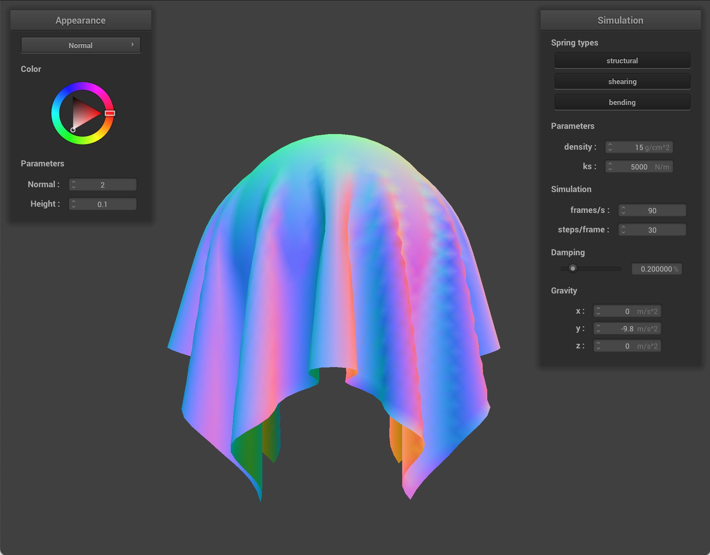
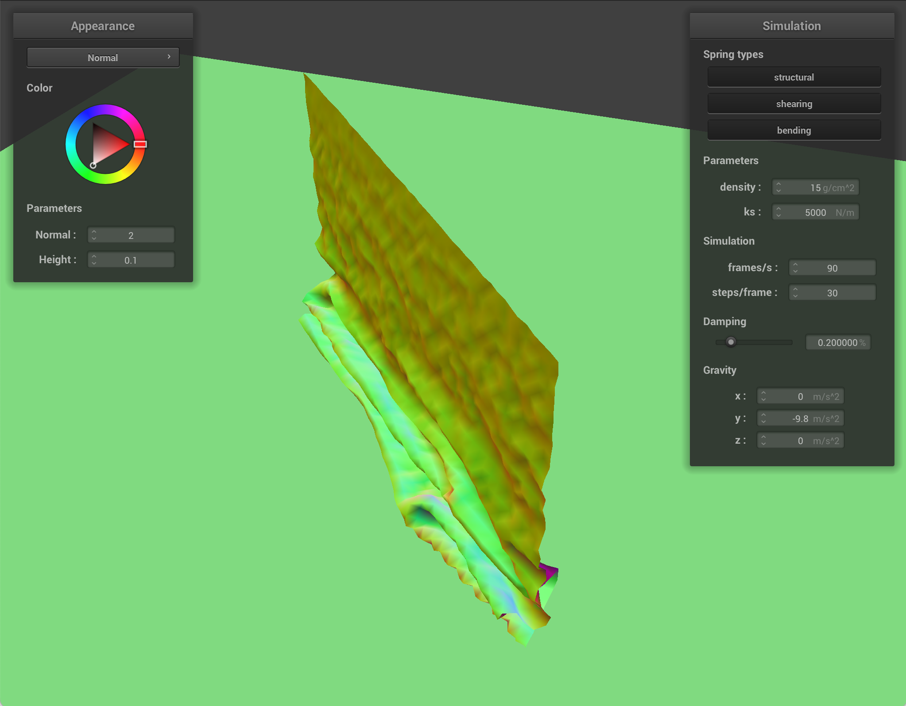
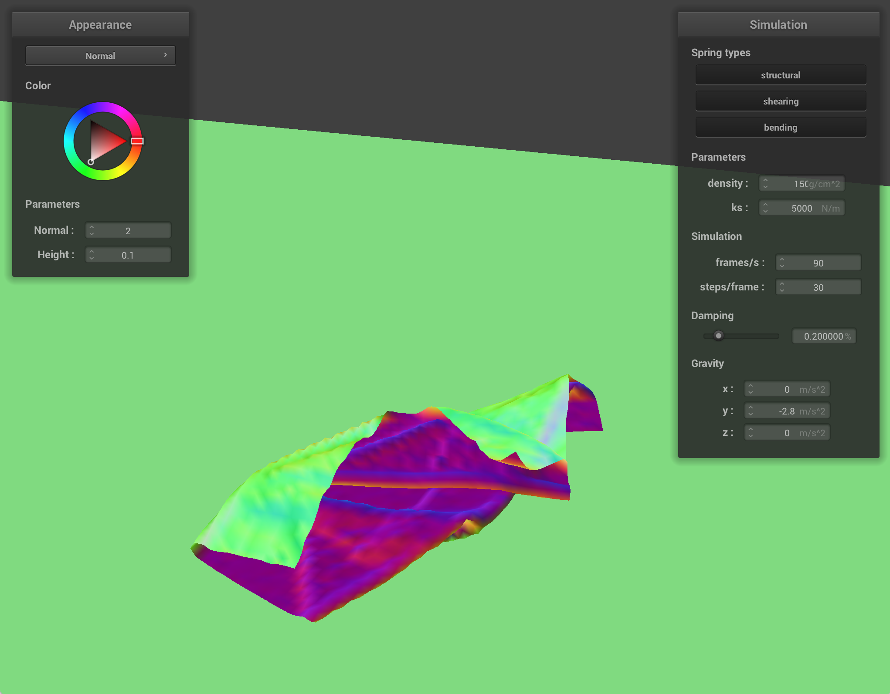
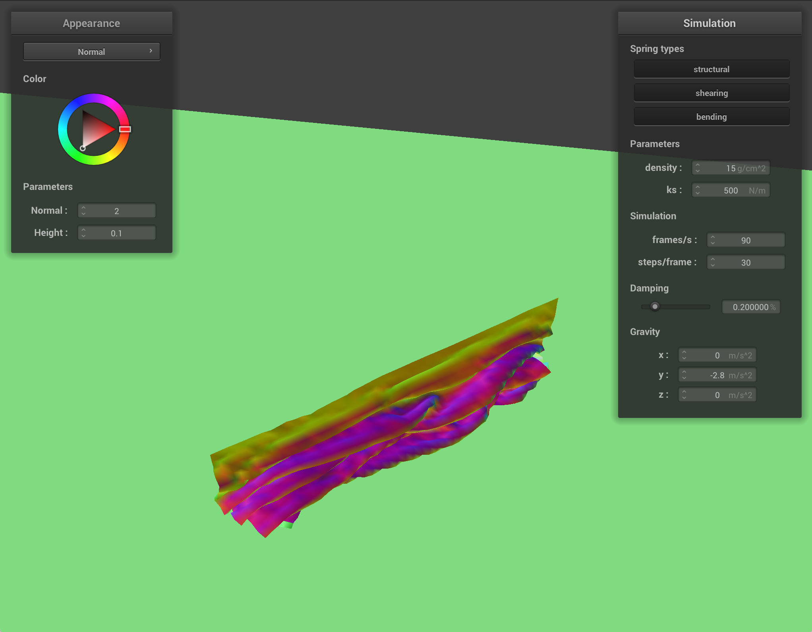

CS184/284A Spring 2025 Homework 4 Write-Up
Link to webpage: https://cal-cs184-student.github.io/hw-webpages-web-up-dog/hw4/index.html
Link to GitHub repository: https://github.com/cal-cs184-student/sp25-hw4-right-dog

Overview
In this project, we built a cloth simulation from the ground up by modeling it as a mass-spring system and exploring how it behaves under different physical forces and constraints. We started by setting up the cloth structure using various types of springs—structural, shearing, and blending—and visualized how the setup changes its shape and density. Then, we brought the cloth to life through simulation, experimenting with different values for stiffness, density, and damping to see how they affect the way the cloth moves, settles, and interacts with gravity. We added collision handling with spheres and planes, and later, self-collision detection to make sure the cloth wouldn’t unrealistically pass through itself. On the graphics side, we implemented Blinn-Phong shading for more realistic lighting, added texture mapping, and compared bump and displacement mapping to see how they change surface detail. One thing that stood out to me was how much small changes in parameters—whether physical or visual—can completely change how realistic and dynamic the simulation feels. It really highlighted how physics and rendering work hand-in-hand in graphics.
Part 1: Masses and springs
Below are the screenshots of the Wireframe from many different viewing angles.
Below are the screenshots of the Wireframe of different configurations.
The cloth forms a perfect rectangular lattice, with horizontal / vertical edges plus the longer 2-hop blending. This type does not have any diagonal springs leaving each quad's interior empty.
Structural and blending edges are absent, leaving a dimond-shaped repeated pattern of diagonals connecting each mass to its 2 upper-row neighbors, resembling a 45 degree rotated grid.
The entire network is visible, with horizontal & vertical structural edges, diagonal shearing edges, and longer blending edges, with every square cell subdivided into 2 triangles, producing the densest wireframe of the 3.
Part 2: Simulation via numerical integration
We tested how different parameters affect the cloth dropping animations.
For Stiffness - ks, I tested the paramter over the values of 100, 5000, 25000, and we
saw the different stiffness demonstrated in the rendering and animation.
Small ks (soft cloth with low stiffness): we can see the sag (arc) between pinned corners is
tighter with smaller radius of curvature as the midpoint drops a lot eventually.
When the cloth eventually falls down or during falling, there are many large amplitude folding and ripples throughout, including the lower half.
During the settling phase after the cloth falls down, there are many gentle oscillations persisting for a while, almost looking like as if it keeps stretching after fallen.
Medium ks (intermediate-soft cloth with medium stiffness): we can see the sag (arc) between
pinned
corners is
more natural with the radius being intermediate between the two extremes.
When the cloth eventually falls down or during falling, there are still smome folding and ripples
throughout, including the lower half, but significantly smaller than in the soft (small ks)
case.
During the settling phase after the cloth falls down, there are still mild oscillations persisting for a while, but rests much faster than the previous case and with smaller amplitude.
Large ks (hard cloth with high stiffness): we can see the sag (arc) between pinned corners is
flatter with larger radius of curvature as the midpoint drops a lot less than earlier cases eventually.
When the cloth eventually falls down or during falling, there are barely any folding and ripples throughout, and the surface looks taut.
During the settling phase after the cloth falls down, there are barely any oscillations persisting over time, and rests much faster into stationary place with almost no visible swinging.
.
.
For Density - density, I tested the paramter over the values of 1, 15, 500, and we
saw the different densities demonstrated in the rendering and animation.
Small density (light cloth with low density): we can see the sag (arc) between pinned corners is
flatter with larger radius of curvature as the midpoint drops a lot less than earlier cases eventually.
When the cloth eventually falls down or during falling, there are barely any folding and ripples throughout, and the surface looks taut except near the pinned corners. The cloth dropping also slowly at first.
Oscillaions are small and high in frequency, and it feels floaty.
Medium density (intermediate-light cloth with medium density): we can see the sag (arc) between
pinned corners is more natural with the radius being intermediate between the two extremes.
When the cloth eventually falls down or during falling, there are still smome folding and ripples extending downward but not as deep as the heavy (high density) case.
During the settling phase after the cloth falls down, there are still mild oscillations persisting for a while, but rests much faster than the previous case and with smaller amplitude.
Large density (heavy cloth with high density): we can see the sag (arc) between pinned corners
is tighter with smaller radius of curvature as the midpoint drops a lot eventually.
When the cloth eventually falls down or during falling, there are many large amplitude folding and ripples throughout, especially near the bottom edge.
During the settling phase after the cloth falls down, there are many gentle oscillations and heavy swining in low natural frequency persisting for a while before coming to a rest.
.
.
For Damping - damping, I tested the paramter over the values of 0%, 0.2%, 1%, and we
saw the different damping effects demonstrated in the rendering and animation.
Small damping same rest shape as default as damping does not affect the equilibrium state, but
the cloth falls with extremly heavy oscillations and swings for minutes without coming to rest over a long
time.
Heavy ripples propagate back and forth for seconds to minutes.
Medium damping same rest shape as default as damping does not affect the equilibrium state, but
the oscillations and swings becomes lot less substantial, and the cloth swings for once or twice slightly
but settles in a realistic amount of time.
Light ripples are visible during falling.
Large damping same rest shape as default as damping does not affect the equilibrium state, but
barely any oscillations and swings persist, and motion is critically dampened and the cloth falls into
resting place lot slower almost as it is being in jelly or glue, as compared to low damping as if in a
vaccum. The ripples are heavily suppressed and the fabric looks flat and viscous.
Light ripples are visible during falling.
.
.
Below are screenshots showing the final resting state of the shaded (Normal) pinned4 cloth.
Below is a screenshot showing the final resting state of the shaded (Normal) pinned2 cloth.
Part 3: Handling collisions with other objects
Collisions with Sphere:Computer \(dir = pm.position - origin\) and compare if \(dir \le radius\), then the point mass is inside or on the sphere, then target the surface point \(spherePos = origin + dir.unit() \times radius\) with partial corrections \(pm.postion = pm.\text{last_position} \times (1 - frictino) \times (spherePos - pm.\text{last_position})\).
The multiplication with \((1 - friction)\) prevents the mass from fully snapping to the
surface of the shere and to preserve some of the tangential motion it has. And unlike the plane
implementation, there is lacking of the tiny pushouts of SURFACE_OFFSET so the repenetration of
it could happen if velocity points back inside the sphere.
Computes signed distances of current and the last of the point to the plane \((n \cdot x + h = 0)\). Then a collision occurs if signs differ.
Then, for both of them, we simply loop ove rall collision objects and call collide for every PointMass, so the cloth now drapes over spheres and stops at planes before the self-collision implementation in part 4.
Compute the signed distances to the plane \(n \cdot (x - point)\) at both old and new positions, and if the product is negative, i.e., \(\text{last_dist} \times \text{cur_dist} \le 0\), the line segment in between crosses the plane.
Then we find the time of intersection, \(t = \frac{\text{last_dist}}{\text{last_dist} - pm.position}\), resulting in a fraction in the range of [0,1] which indicates where the plane is hit: \(pm.\text{last_position} \rightarrow pm.position\).
And to prevent cloth overlapping the space with the plane, we add a normal \(normal \times \text{SURFACE_OFFSET}\) to stay just above the plane, then multiple by \((1 - friction)\) to retain lateral motion, allowing for cloth sliding activities.
.
.
Small ks (soft cloth
with low stiffness): we can see the cloth sags deeply and clings to the
sphere closer while pooling at the equator, with large folds cascading down the sides, and excess fabric
gathering near the bottom, forming many wrinkles.
This is mainly because the low stiffness lets gravity stretch the mesh more easily, with contact forces pushing nmasses outward till springs equilibrate, so it conforms tightly and wrinkles easily.
.
.
Medium ks (intermediate-soft cloth with medium stiffness): we can see the cloth drapes over
the
sphere with moderate folds diminishing towards the lower rim.
This is because springs are stronger and able to resist more extreme stretching but still let the cloth settle into concave regions..
.
.
Large ks (hard cloth with high stiffness): we can see the cloth baerly sags and touches the
sphere shallowly with barely any deformations, with the surface looking taut with smalle folds and
wrinkles,
but most noticeably is its edges hover.
This is mainly because the high stiffness counteracts gravity quickly, and having small correction vectors from the sphere, so only nearby masses reach contact before network stops stretching.
.
.
Below is a screenshot of the cloth laying on the plane.
Part 4: Handling self-collisions
Self-collisions is achieved with the 3 functions we modified.
First, with hash_positions, which maps 3d point to hashkey representing a spatial bin of 3x3x3
cubic cm like box, we scale the cloth's x, y, z extents into integer grid coordinates,
then pack them into a 32 bit integer and cast to float so it can be used as an unorderd_map
key.
Then, weith bulid_spatial_map, which we calls and rebuild the hash table at each time step, we
clear the map and for every PointMass, we co,pute
a key, then push into that bucket's vector a pointer.
Eventually, with self_collide, which push a single PointMass out of its neighbors
if too close, we fetch the bucket for pm, then for every other PointMass in the
same bucket,
measure distance d, eventually when \(d \le 2 \cdot \text{thickness}\), we aggregate a
correction so the pair will be exactly 2 times thickness apart, and eventually with all the corrections, we
can average them then divide by simlutaion_steps and add to pm.position unless the
cloth is pinned.
.
.
Below are screenshots that document how your cloth falls and folds on itself, starting with an early, initial self-collision and ending with the cloth at a more restful state (even if it is still slightly bouncy on the ground).
|  |
.
.
Below are the screenshots showing the shaded cloth falling on itself under different values of density (1, 15, 150).
Small density (light cloth with low density): we can see the cloth eventually falls down with
barely any folding and ripples throughout, and the surface looks taut and flat.
Oscillaions are small and high in frequency, and it feels floaty, and eventually coming to a flat resting state much faster.
.
.
Medium density (medium-lightness cloth with medium density): we can see the cloth falls down
with more folding
and ripples throughout, and the surface looks wrinkled.
.
.
Large density (heavy cloth with high density): we can see the cloth falls down or
during falling, there are many large amplitude folding and ripples
throughout, especially near the bottom half that touches the plane first.
During the settling phase after the cloth falls down on the plane, there are many gentle oscillations and heavy swining in low natural frequency persisting for a while before coming to a rest.
|  |
.
.
.
Below are the screenshots showing the shaded cloth falling on itself under different values of stiffness (ks) (500, 5000, 50000).
Small ks (soft cloth with low stiffness): we can see the cloth falls down or
during falling, there are many large amplitude folding and ripples
throughout, especially near the bottom half that touches the plane first.
During the settling phase after the cloth falls down on the plane, there are many gentle oscillations and heavy swining in low natural frequency persisting for a while before coming to a rest.

|
 |
.
.
Medium ks (medium-soft cloth with medium stiffness): we can see the cloth falls down
with more folding
and ripples throughout, and the surface looks wrinkled.
.
.
Large ks (hard cloth with high stiffness): we can see the cloth eventually falls down with
barely any folding and ripples throughout, and the surface looks taut and flat.
Oscillaions are small and high in frequency, and it feels floaty, and eventually coming to a flat resting state much faster.
Part 5: Shaders
Blinn-Phong Shading
As seen in lecture, the Blinn-Phong shading model is a shading method used to simulate realistic lighting on surfaces by combining three main components: ambient, diffuse, and specular. The ambient term provides a constant base illumination independent of the light direction, represented by \(k_a \times I_a\), while the diffuse term calculates how light is scattered when it hits a surface based on the angle between the surface normal and the light direction, using \(k_d \times (I/r^2) \times \max(0, n \cdot l)\). Additionally, the specular term adds a shiny highlight by computing the reflection of light based on the half-vector between the light and view directions, expressed as \(k_s \times (I/r^2) \times \max(0, n \cdot h)^p\). In our code, these components are implemented by normalizing the necessary vectors, computing the squared distance \(r^2\), and then summing the three contributions to determine the final color output, resulting in realistic highlights and shading effects on the cloth + sphere!
We can see Phong shading in action below with just its individual components and also with all three components together. When combined, we get a nice, realistic rendering of the cloth + sphere.
|
|
|
|
|
|
Texture Mapping
Here is the result of using texture mapping shader on the cloth simulation but with a picture of a pug!
|
|
Bump Mapping and Displacement Mapping
Bump mapping and displacement mapping are two techniques for adding surface detail using height maps, but they differ in how they affect the final render. Bump mapping modifies only the normals by computing changes in height over the texture coordinates, resulting in variations in lighting that simulate surface irregularities without actually changing the geometry; this makes it computationally efficient while maintaining the original silhouette of the object. In contrast, displacement mapping goes a step further by altering the actual vertex positions based on the height map (i.e., \(p' = p + n \times h(u,v) \times k_h\)), which leads to real geometric deformation that affects the object's outline and can produce more convincing results.
In the renderings below, we can see that with bump mapping, the cloth is more smooth and with displacement mapping, the cloth is more bumpy. This is expected as bump mapping changes the normals, while displacement mapping modifies the vertex positions, changing the overall shape of the sphere.
|
|

|
Mesh coarseness: -o 16 -a 16
|
|
|
Mesh coarseness: -o 128 -a 128
|
|
|
We can also change the coarsness of the mesh and compare both bump mapping and displacement mapping. We can see that with the coarser grid (-o 16 -a 16), we get a bumpier sphere for displacement mapping. On the other hand, with a finer grid (-o 128 -a 128), we get a smoother overall sphere for displacement mapping. The bump mapping for both spheres appear to be quite similar or even identical because the coarseness does not really affect the appearance of the sphere.
Mirror Shading
|
|